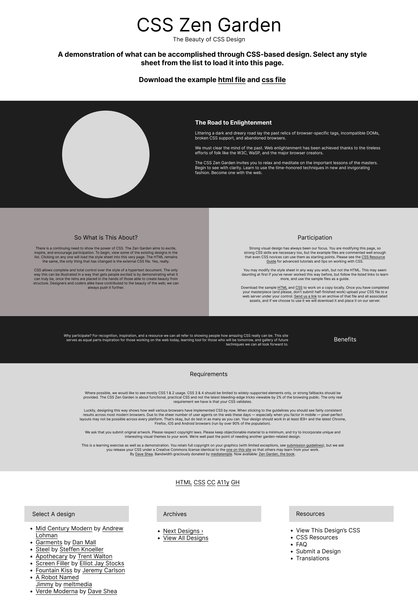
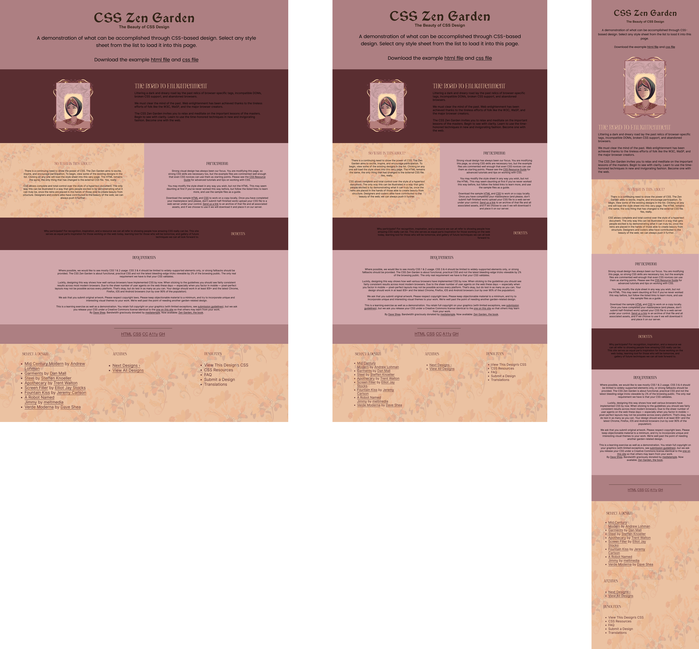

For the CSS Zen Garden Challenge, I was tasked with transforming the presentation of a single HTML file using only CSS. The goal was to demonstrate the power and versatility of CSS in creating diverse and visually appealing designs without altering the HTML structure. This challenge emphasized the importance of separating content from presentation.
My concept for this project was to apply the Art Nouveau style, known for its organic, flowing lines, intricate patterns, and nature-inspired motifs. I aimed to create a unique and aesthetically pleasing design that reflects the elegance and beauty of Art Nouveau.
I began my design process for the CSS Zen Garden project by crafting wireframes using Figma, a digital design tool. These wireframes served as a blueprint, allowing me to visualize how the new design elements would seamlessly integrate with the existing layout. Much like sketching on paper, this step helped me conceptualize the flow and user experience before transitioning to digital renderings.
Following the wireframing stage, I proceeded to develop a high-fidelity prototype. Leveraging the detailed wireframes as a guide, I refined the design further, incorporating colors, typography, and imagery to create a more polished representation of the final product. This stage allowed for a more immersive and realistic user experience, providing stakeholders with a clearer vision of the end product's look and feel
